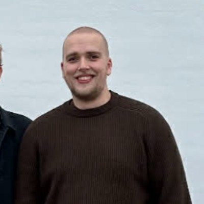

Bachelor of Engineering, Business Development

Philip Lau (Lau)
I am a passionate individual who puts full energy into bridging the gap between technical development and strategic management. I focus on implementing intelligent automation framework architectures and translating complex tech logic into clear business value.
02Featured Media

TBMI — Witt A/S
Technological Business Model Innovation (TBMI): A formal business proposal evaluating advanced automation ecosystems and intelligent process enhancements. Engineered within the Customer Service Department environment utilizing targeted Power Automate flows and AI Builder structures.
03Coding Languages & Tools
Learning Right Now
On My Bucket List
04Professional Skills
Technical Capabilities
- Generative AI Ecosystems – Building and tuning search pipelines using RAG, GraphRAG, and vector similarity architectures.
- Application Automation – Building custom business dashboards, workflow rules, and low-code integrations using the Power Platform ecosystem.
- Cybersecurity Basics – Analyzing application architectural vulnerabilities using structured threat modeling blueprints.
- Data Analytics & Web Tech – Writing clean server-side code, styling user environments, and relational database scripting.
Leadership & Strategy
- Bridging Tech and Business – Translating complex engineering limitations into functional, value-driven strategy roadmaps.
- Team Leadership & Management – Directing project workloads, handling operational shift handoffs, and resolving interpersonal issues smoothly.
- Stakeholder Communication – Presenting architectural progress reports and aligning technical requirements with multiple enterprise business divisions.
- Academic Instruction – Explaining complex computer concepts step-by-step and running clear developer learning workshops.
03Experience
Research Assistant
- Leading digital competency initiatives bridging academic frameworks with industry best practices.
- Engineered an internal hybrid RAG Customer Service Agent (BM25, Similarity Search, GraphRAG) evaluating technical document processing streams.
- Architected an open-source, transparent C#/.NET agentic literature review environment for the OSSYM 2026 conference in Berlin.
Student Worker — Digitalization
- Served as a citizen developer delivering 15+ Power Apps solutions and over 50 automated cloud processing streams.
- Shipped a structured RAG proof-of-concept parsing complex technical documentation for engineering units.
- Designed and scaled custom automated engineering newsletter systems delivering localized content metrics.
Student Instructor — Web Technologies
- Instructed undergraduate students in the course web technologies covering the languages: HTML, CSS, JavaScript, PHP, and MySQL.
- Recieved a 4.9 evaluation out of 5, on my ability to teach the material.
04Education
MSc in Engineering Technology-Based Business Development
- Focus areas: Advanced Enterprise System Architectures, Python Machine Learning Frameworks, Digital Front-End & Back-End Solutions.
[+] VIEW MASTER'S COURSES
- • Digital Back-End Solutions
- • Digital Front-End Solutions
- • Design of Digital Enterprise (DDE)
- • Python Fundamentals for Machine Learning
- • Technological Business Model Innovation
- • Technology Focus Project
- • Technology Specialisation 1 & 2
- • Business Development Project
- • Management of Technology
- • Master Thesis Project
Bachelor of Engineering Business Development (BDE)
[+] VIEW BACHELOR'S COURSES
- • Applied Mathematics
- • Advanced Web Development
- • Engineering Internship
- • Individual Technology Focus
- • Industry 3.0 - Industrial Plant Automation
- • Industry 4.0 - Internet of Things
- • Innovation Management
- • Introduction to 3D Print Additive Manufacturing
- • Market Analysis & Methodology
- • Marketing and Finance
- • Negotiation Tactics
- • Personal and Social Competences
- • Physics
- • Project Management
- • Quality Management
- • Strategic and Economic Analysis
- • Supply Chain Management
- • Technological Product Development
- • Technology-based Concept Development
- • Web Technologies
- • Bachelor's Project